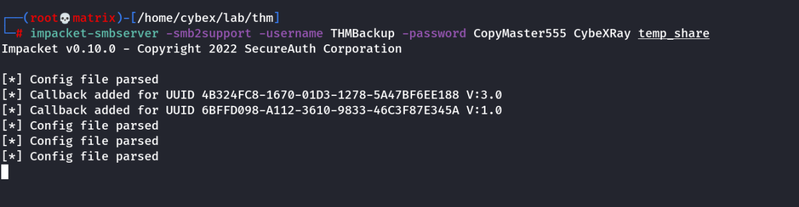
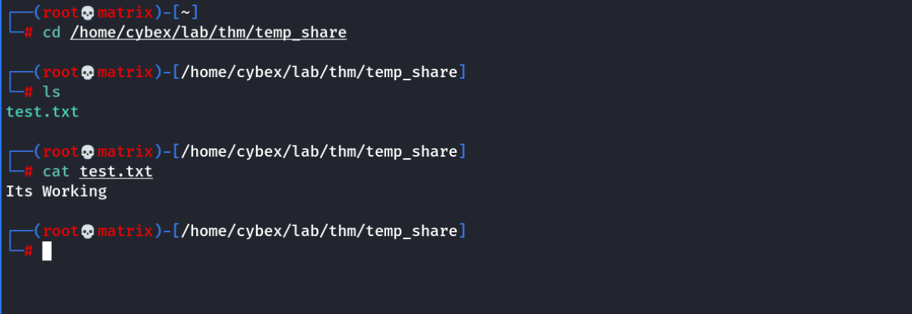

smbserver
SMB Share in Local Machine
For SMB, we can use impacket's smbserver.py to start a simple SMB server with a network share in the current directory of our AttackBox:
Kali Linux
mkdir share
python3.9 /opt/impacket/examples/smbserver.py -smb2support -username THMBackup -password CopyMaster555 public share
This will create a share named public pointing to the share directory, which requires the username and password of our current windows session.
Example:
On Kali

On Target Windows

We can even open the same in the explorer by using: \\10.11.72.31\CybeXRay

Now, Verify in Kali
